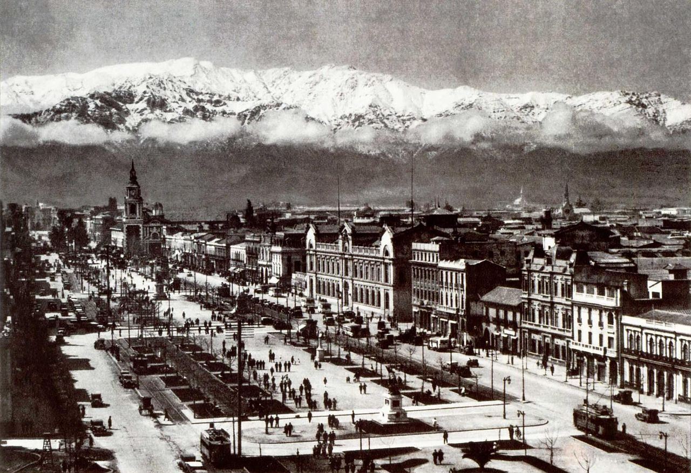
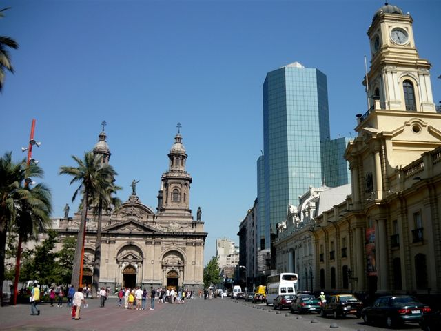
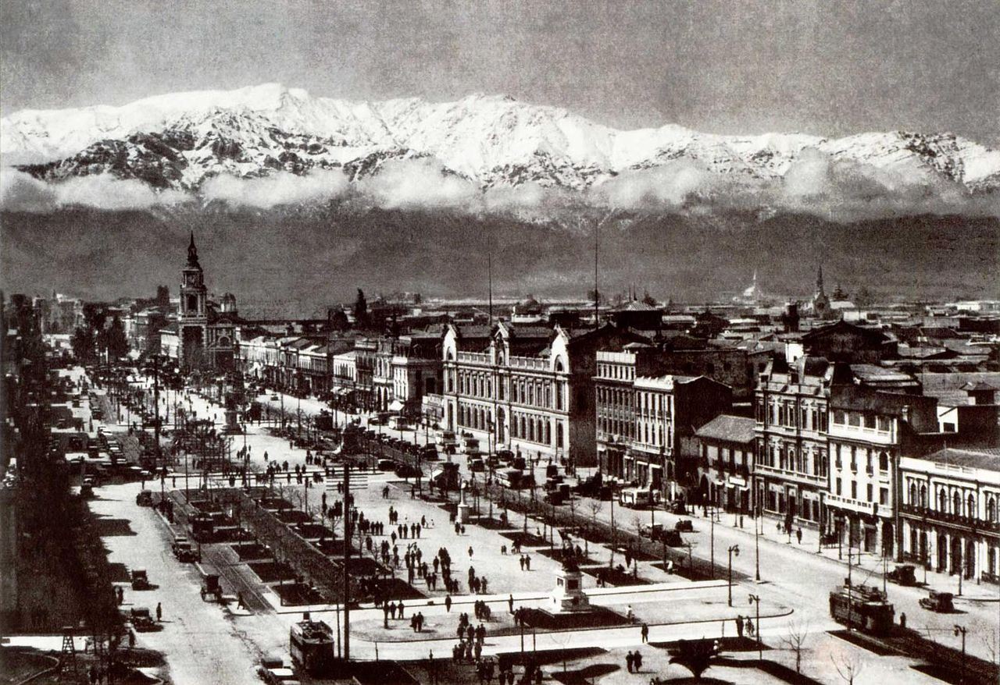
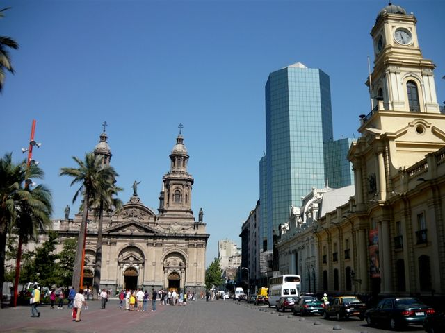

Сантья́го (исп. Santiago [sanˈtjaɣo]) — столица и крупнейший город Чили. Административный центр Столичной области и провинции Сантьяго. Представляет собой конгломерат 37 разрозненных коммун без единого органа управления.
Население — 5 279 190 человек (2020), или 36 % населения страны, один из крупнейших городов Южной Америки. Главный политический, экономический и культурный центр Чили. Относится к глобальным городам второго порядка (тип Альфа−). Производит 43 % ВВП страны (2005). Транспортный узел на Панамериканском шоссе.
Город расположен в межгорной котловине у подножия Анд на высоте около 540 метров над уровнем моря, менее чем в 100 км к востоку от Тихого океана, подвержен землетрясениям. Климат средиземноморский.
Основан в 1540 году испанским консулом Педро де Вальдивия, назван в честь святого Иакова. Имеет статус столицы с 1817 года.
Подробнее...
 
